|
|
HELP FIND THE FOLLOWING LOCATIONS
PAGE 41
THE BARON: Countdown (Robert Asher:
October 1966)
Unknown
1 - Arkin Morley drives his Rover from the
film studios and brags to Compton how he tricked The Baron.
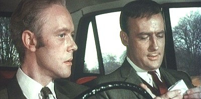

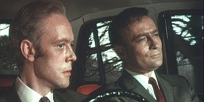

Unknown 2 - Mannering and Cordellia drive to Parkstone House.
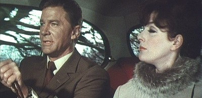
THE BARON: Roundabout (Robert Tronson:
August 1966)
144 Champs Elysees, Paris
- It is night and Georges Delair is in
his apartment on the Champs
Elysees with his mistress, Jeanne Varda (Cinema UGC George V, 144
Champs Elysees).
Eifel Tower, Paris - Establishing shot of Paris.
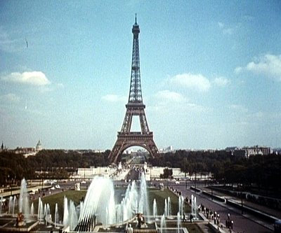
Champs Elysees - The Baron is driven by Peter Savell down the Champs Elise towards The Gare du Nord (corner of Rue Balzac).
Place De Opera - The Baron is driven by Peter Savell past the Opera towards The Gare du Nord.
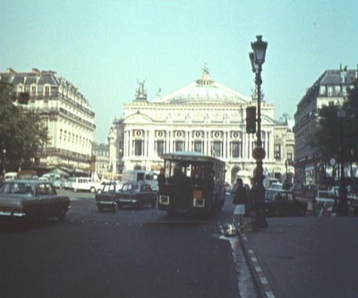
Gare du Nord, Place Napoleon III, Paris - The Baron is driven by Peter Savell to The Gare du Nord.
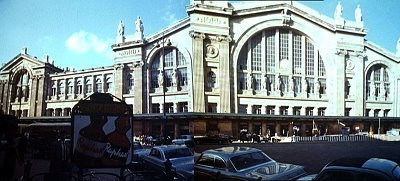
Unknown 1 - The Baron is driven by Peter Savell to The Gare du Nord.
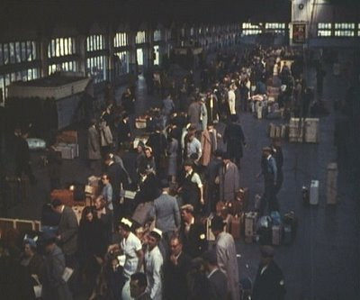
 Is this The
Gare du Nord?
Is this The
Gare du Nord?
Hotel Raphael, 17, Avenue Kléber - The Baron goes to the male beauty salon run by Jeanne Varda (Hotel Raphael, 17, Avenue Kléber).
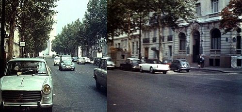
Avenue Kléber- Establishing shot of Paris showing Eifel Tower as seen from the roof of Hotel Raphael, 17, Avenue Kléber.
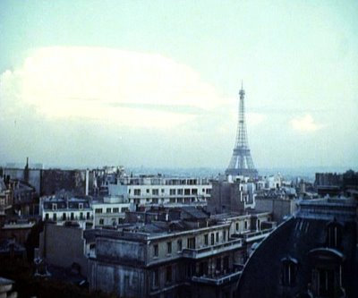
rue du Faubourg-Montmartre, Paris, France - After their escape John Mannering is driven through Paris by Samantha Ballard.
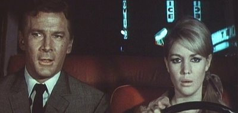
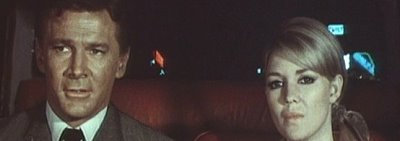
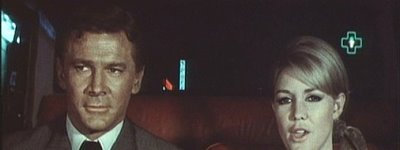
Piazza della Borsa, Naples Italy- John Mannering is waiting for Georges Delair and Jeanne Varda in their apartment. Samantha Ballard watches from the street outside (1 Corso Umberto, Naples, Italy).
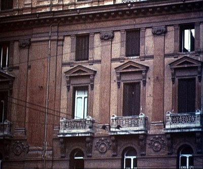
Unknown 2 - The car with John Mannering, the wounded Georges Delair and Jeanne Varda travels north on Route National 1.
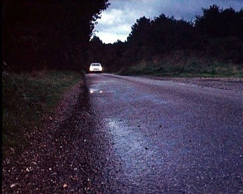
 Hadley
Common?
Hadley
Common?
Think you know a spot? Need a bigger image? Email me.
< Previous | Index | Avengerland | Next >
Copyright © 2023 Anthony R. McKay